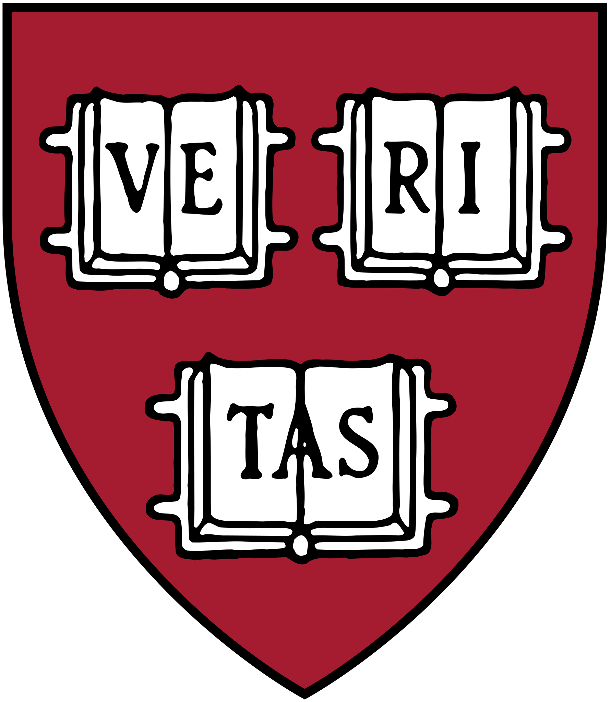
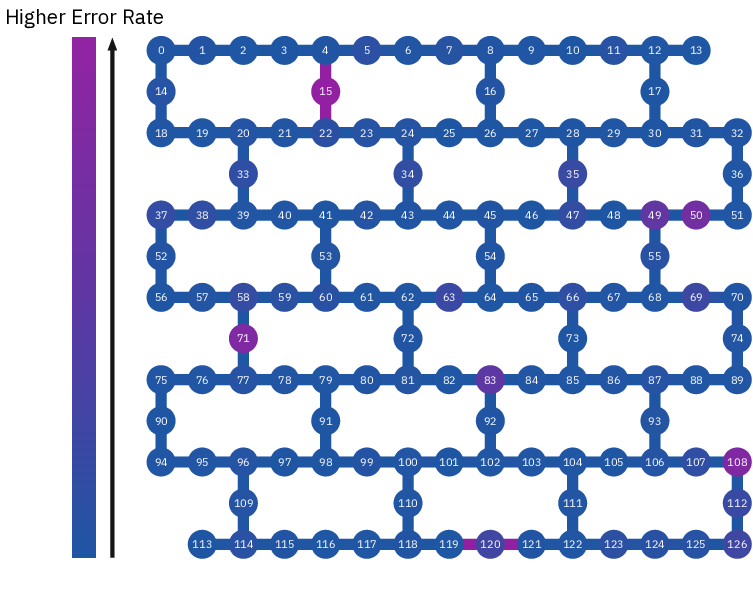

I am working to fully automate the scientific method. I look forward to a near-future where humans interface biological with artificial intelligence, build near-unlimited energy sources, and cure all disease—including aging.
Welcome! I'm a PhD student at Harvard building quantum computers in the Ni Lab. My research interests lie in using arrays of neutral atoms to investigate new chemistry and implement quantum error correcting codes. I am supported by the NSF Graduate Research Fellowship Program.
I'm also the CEO of Inkwell, the first AI-native classroom management platform for teachers. Inkwell saves teachers ~10 hours/week of grading, tutors students on any topic 24/7, and eliminates AI cheating + plagarism.
Before Harvard, I was an engineer at the MIT-IBM Watson AI Lab on the Qiskit quantum compiler team. I received my B.A. in Physics from Duke University in 2023 where I was supervised by Professor Kenneth Brown.
You can reach me at hkemeny@g.harvard.edu and find my CV here.
2024—
Neutral Atom Arrays for Quantum Computing and Simulation

PhD Student | Advisor: Professor Kang-Kuen Ni
Building a neutral atom quantum computer with cesium and sodium atoms. I completed the design and construction of a new ultra-high-vacuum chamber. This upgrade positions the experiment to reach higher Rabi frequencies on sodium and suppress stray-field-induced dephasing, key parameters for the high-fidelity quantum operations we plan to demonstrate in the coming year. In parallel, I wrote FPGA-based control code that automatically locks our excitation lasers, eliminating daily manual tuning; I also installed a new optical breadboard for the improved imaging fidelity of sodium. Ultimately, I aim to use AI and automation techniques to build a self-driving lab.
2023—
Inkwell. The First AI-Native Classroom
Inkwell
Cambridge, MA | CEO and Co-Founder
While I was a visiting student at MIT EECS in 2023, I started building ChatTutor, an AI embedded into class websites that is fully aware of all coursework. Many MIT professors were enthusiastic to use the tool, so I brought on Aatmik Mallya, one of my best friends from high school, and we co-founded ChatTutor, Inc. For this work, I was invited to speak at MIT Generative AI Day in 2023.
We soon realized that a simple RAG chatbot doesn't take advantage of the full power of modern AI tools. I envisioned an entire learning platform with AI threaded into every workflow. It can grade assignments, learn students strengths/weaknesses like a human tutor, and come up with practice tailored for the needs of a class or even specific students. Aatmik and I built this platform, called Inkwell, in 6 weeks on top of our PhDs.
We look forward to working with school districts, colleges, and technical schools around the country!
2022—2024
Benchmarks for Superconducting Circuits and Quantum Compilers
QURIP Intern Full-Time Research Engineer
A significant portion of the excellent research in quantum computing takes place in industrial labs. In summer 2022, I was lucky to be accepted to the Quantum Undergraduate Research at IBM and Princeton program where I had the opportunity to work on benchmarking IBM's superconducting quantum computers in Yorktown Heights.
I investigated experiments traditionally performed in the Nuclear Magnetic Resonance (NMR) setting—like spin-locking T₁ρ, Hahn echo, T₂*, etc—and applied them to benchmark the quantum coherence of superconducting qubits.
Spin-locking pulse sequence for coherence preservation in quantum systems. Left panel: With spin-locking, the quantum state remains largely preserved, indicating maintained quantum coherence. Right panel: Without spin-locking, free evolution leads to rapid dephasing and decoherence, evidenced by the shrinking arrow length. Bottom panel: Pulse sequence timing showing the three-pulse protocol with time progression indicator. The comparison clearly illustrates how spin-locking techniques can significantly extend quantum coherence lifetimes by suppressing environmental decoherence effects, making this a crucial tool for quantum information processing and NMR spectroscopy applications.
The benchmarks I created are used as an extension of Qiskit Experiments to test the coherence times of qubits across topologies of superconducting quantum circuits like the one shown below.

On the left: IBM Q System One, a superconducting quantum computer. On the Right: The topological graph of IBM Quebec, a 127 qubit circuit with benchmarked error rates.
I also had some fun with other projects at Yorktown...
I was initially expecting to graduate from Duke in 2024 but ended up receiving a return offer from IBM, motivating me to accelerate my degree by one year. As a research engineer working at the MIT-IBM Watson AI Lab, I worked yet again on benchmarks. This time, I built a benchmarking tool to compare the memory efficiency, circuit complexity, and timing between any quantum compilers.
A comparison between Qiskit and Pytket compilers for select quantum circuits. RedQueen allows users to add their own quantum compilers to run any comparison of their choosing. RedQueen was superseded by BechPress after I left IBM.
When GPT-4 was released, I immediately realized that the theoretical and computational methods I'd worked years to hone will soon become obsolete. I decided to leave IBM and return to grad school as a first-time experimental physicist in order to gain skills in building physical hardware and apparatuses.
2023—2024
Quantum Sensors for Navigation Without GPS
Visiting Student | PI: Professor Dirk Englund
Quantum computers will ultimately revolutionize a vast array of fields, from drug discovery to cryptography and materials design. After spending several years in the field, I wanted to see what applications quantum technologies are enabling today. One area is quantum sensing, which has already proved useful for neuroimaging and gravitational wave detection in LIGO. Thus, I joined Professor Dirk Englund's lab collaborating with Honda Research Initiative on quantum sensors to enable vehicle navigation in GPS-denied areas.
I derived information-theoretic bounds for networks of quantum magnetometers—advanced sensors that measure magnetic fields more accurately than classical sensors—defining fundamental performance limits. I then pulled on work from computational fluid dynamics to implement a machine learning algorithm for reconstructing continuous magnetic fields given a small set of sensor measurements.
My simulated magnetic field reconstructions, along with theoretical work I contributed laying the foundations for vehicle geolocating, paves the way for future work on vehicle geolocation with solely on-board physical quantum sensors.
After spending sophomore year researching trapped-ion quantum computers, I wanted to learn more about other promising platforms for quantum computing. Google and IBM have both heavily invested in superconducting qubits, a quantum technology that uses ultra-cold superconductors as giant atoms to support quantum dynamics. Intrigued by the strong focus from industry players on this technology, I joined Professor Andrew Houck's group at Princeton in summer 2022 where I worked on superconducting quantum memories.
One promising avenue for quantum memories is "slow light", a phenomenon that occurs when the group velocity of photons is reduced to near zero. Circuits can be engineered to create slow light, but finding geometries small enough to fit on a superconducting chip can be challenging. To this end, I found a simple lattice geometry[1] supporting slow light and simulated circuit dynamics to determine if population revival—a key condition for quantum memory in our chosen regime—could be observed under realistic experimental disorders.
Quantum revival dynamics in a photonic tight-binding lattice with qubit at stationary inflection point. (a) Upper panel: Real-time visualization of photon population dynamics. A single qubit (large node) is coupled to the central resonator. (b) Lower panel: Qubit population vs. time showing characteristic revival dynamics. The numbered points mark critical phases: (1) initial excitation (t = 0 μs), (2) population minimum as photons tunnel into the lattice (t ≈ 1.5 μs), (3) revival peak as photons return to the qubit (t ≈ 3.0 μs), and (4) final equilibrium state (t ≈ 7.2 μs). The slow-light dynamics enable non-Markovian quantum revival, demonstrating enhanced qubit-photon interaction time scales for quantum information processing applications.
This simulation successfully demonstrated revival behavior, a promising indicator for this device's potential for supporting quantum memory. For this work, I was selected by Duke as a finalist for the Barry M Goldwater Scholarship. You can read my writeup here.
2021—2023
Pulse Optimization for Trapped-Ion Quantum Computers
After becoming obsessed with the science of disease and aging, I wanted to build new technologies that could accelerate research toward eventual cures. Quantum computing's promise to aid in drug discovery led me to join Professor Kenneth Brown's lab at Duke Quantum Center building trapped-ion quantum computers.
A key objective for quantum computing experiments is the optimization of gate fidelity, which measures how often quantum gates produce desired outputs. However, methods to improve fidelity are typically specialized for a single type of gate and specific experimental apparatus. I developed a general tool that optimizes laser pulse amplitudes and frequencies to implement a wide class of high-fidelity gates for trapped-ion platforms.
Entangling gate dynamics for a 5-ion trapped ion quantum computer. (a) Phase space trajectories for six motional modes, showing the displacement evolution during the optimized pulse sequence. (b) Pulse frequency evolution over time showing the optimized frequency modulation pattern. (c) Gaussian-shaped Rabi frequency envelope demonstrating the amplitude modulation of the laser field. (d) XX-rotation angle evolution showing the target π/4 rotation required for the two-qubit entangling gate. The optimization successfully creates the desired entangling operation while minimizing residual motional excitation.
Using my tool, experimentalists can easily find optimal gates for their experimental configurations by inputting the trap parameters (like mode frequencies and Lamb-Dicke parameters) on the command line. This work led to a collaboration with Sandia National Labs where I interfaced my gate-fidelity optimizer with Sandia's quantum assembly language, enabling experiments with my gates on their trapped-ion platform.
2021—2023
Unsupervised Learning for Particle Tracking @ Large Hadron Collider
For years, my main focus has been building new technologies with the goal of accelerating our species towards curing all disease and aging. But I also had a lifelong dream of exploring fundamental questions about our universe. I realized this dream when I returned to college after my gap years and joined Professor Ashutosh Kotwal's research group investigating potential dark matter signatures at the Large Hadron Collider (LHC).
The LHC creates high-energy proton collisions, generating thousands of particle fragments detected by cylindrical arrays of pixel sensors. Identifying metastable particles, potential indicators of dark matter, within this immense data volume is computationally challenging—existing CPUs cannot process collision data quickly enough. To address this, I designed an FPGA-based algorithm that significantly accelerates real-time identification of these particle trajectories through graph-computing and unsupervised learning.
Examples of the track-finding ability of the algorithm, demonstrated on simulated data. Cocentric cylindrical sensors with radii 5cm-25cm detect particle fragments from collisions. The red points represent hits associated with the high-momentum particle of interest, and the blue points represent hits from random noise. We begin with a fully connected graph of all possible particle paths, then our algorithm systematically eliminates unlikely paths. The red curve indicates that the simulated metastable particle trajectory is successfully identified. The embedded metastable particle has a transverse momentum of 10 GeV/c and traverses an axial magnetic field of 2 T.
Our solution achieved state-of-the-art throughput of less than 250 nanoseconds per collision, a 100x improvement over existing LHC capabilities. This work culminated in my co-authoring a paper published in Nature Scientific Reports, marking a meaningful step towards enabling new physics discoveries at the LHC. You can also read the Science Daily article about our work here.
2019—2021
KronaCash and OneHealth
Phoenix, AZ | Gap Years
After my freshman year of college, I took a gap year and co-founded a company with my friends from high school called KronaCash, an app to save you as much money as possible. We taught ourselves web and mobile development from scratch and started building a pipeline to find all applicable coupons and rewards whenever the user swiped their credit card. It was like Honey but for in-person retail.
When the pandemic hit, we realized it was impossible to collect the data we needed from local brick and mortar to aggregate coupons and rewards. Simultaneously, I read Lifespan by David Sinclair and became obsessed with health and longevity, so we pivoted to building an all-in-one personalized health app suggesting workouts, diet, mindfulness, etc. This was OneHealth.
We were on the app store for a while, and although I love startups and programming with my friends, I ultimately decided to focus on developing deep scientific technical skills so I could work on building next-generation technologies like AI and quantum computers. I felt that college courses weren't fast-paced enough, so I took another gap year to self-study nearly the entire CS, math, and physics majors from MIT OpenCourseWare.